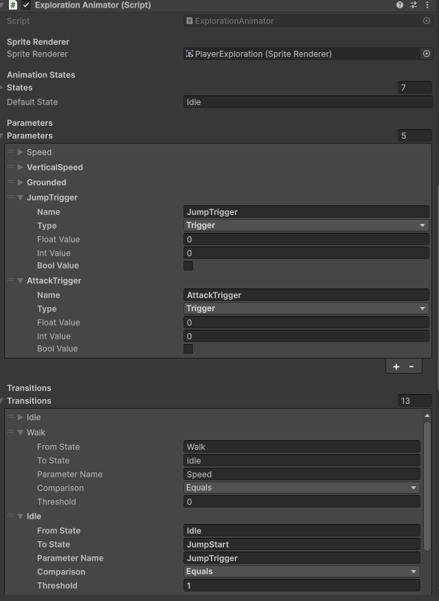
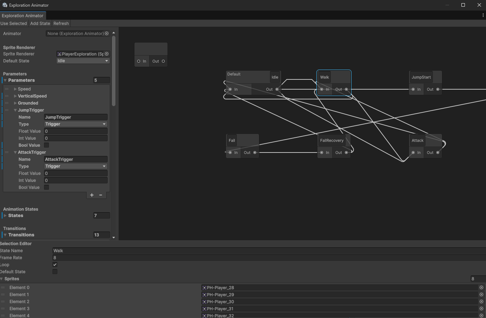
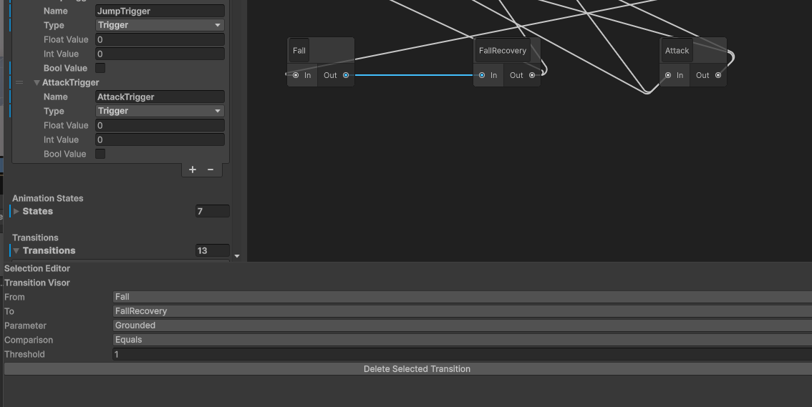

My Custom Animator for HexTurn
This is a custom animation system and editor tool I built in Unity for my project HexTurn. Instead of using a large controller setup, I created a focused workflow for sprite-based state animations and transitions.
The system includes both an editor graph and a runtime animation player:
- Visual graph editor window to create and manage animation states.
- Drag-and-connect transitions between states using Unity GraphView.
- Special Any node support for global transitions.
- State rename/delete handling with automatic transition updates.
- Default state management directly from the editor.
- Transition inspector with parameter, comparison, and threshold values.
- Curve offset for reverse transitions so graph links are readable.
- Runtime sprite playback with looping idle animations and one-shot clips.
Why I built it: I wanted an animator workflow tailored to my game logic, with clear state control and faster iteration while designing exploration/combat visuals.
Core scripts used in this tool:
- ExplorationAnimatorWindow.cs - custom editor window and inspector panels.
- AnimatorGraphView.cs - node graph, connections, selection and callbacks.
- AnimatorStateNode.cs - editable state nodes with default-state feedback.
- AnimatorEdge.cs - transition edge visuals and curved reverse links.
- SpriteAnimationPlayer.cs - runtime frame playback (loop and play-once).
Here are some screenshots of the custom animator workflow:


